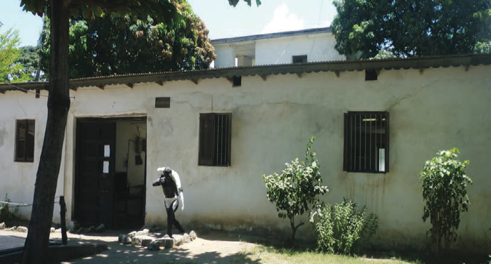

Pia, baadhi ya mapishi ya vyakula kama vile pilau, jamii zetu zimerithi kutoka kwa wageni hao.
Urithi wa Kihistoria unaohusu biashara ya utumwa nchini
Maeneo ya Bagamoyo kuna urithi wa magofu unaotokana na biashara ya utumwa. Wafanyabiashara wa biashara ya utumwa walitoka nchi za Uarabuni. Bagamoyo kuna jengo la Caravan Serai ambalo lilikuwa hoteli ya wafanyabiashara wa watumwa (chunguza Kielelezo namba 13).

Pia, maeneo ya Zanzibar kuna magofu na majengo yaliyotumiwa kwa ajili ya kuhifadhi watumwa na kuishi wafanyabiashara wa biashara ya watumwa (chunguza Kielelezo namba 14).
Historia ya Tanzania na Maadili STD 3 PB Final.indd 34
29/11/2024 17:14